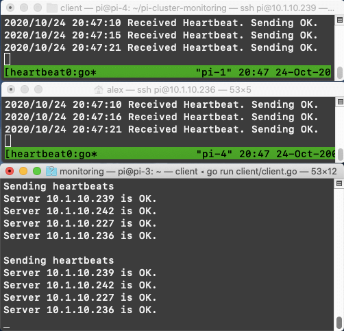

Checking if the Pi is done
Basic monitoring for a Raspberry Pi cluster
Nov 10, 2020 · 1166 words · 6 minutes read
I recently put together a Raspberry Pi cluster to try out some toy distributed systems projects, and I wanted to start with a basic monitoring program to get my feet wet and work out the following:
- Getting each node running and set up with software
- Running Go on each machine
- Deploying code to each machine
- Nodes listening & responding to RPCs
- Sending/receiving RPCs between laptop and nodes
As I’ve previously mentioned, this isn’t meant to be production grade, since I would just grab one off the shelf if that was the goal. Instead, I want to work through the problem myself to get a feel for design decisions and making it work.
System design
We can set up a basic monitoring system by running a server on each of the nodes that listens for a heartbeat RPC. As a first step, we can have the servers respond with an OK status, and anything other than an OK response can signal a problem. We can have our main node — the one that will be monitoring the others — make requests to the child nodes at a certain interval and report the results.
A quick sketch would look like this:
This means that there will be two main components to our code: a server running on each child node and a client running on the main node.
Child node code
Each child node will run a small server that waits for a heartbeat request and responds immediately with “OK”. We can keep this very simple, first by defining the RPC arguments and response:
// Args is the empty input to the heartbeat RPC.
type Args struct{}
// Reply is a simple boolean response.
type Reply struct {
OK bool
}
We can then create an RPC server that listens for a heartbeat RPC on a given port. We’ll want our server to do the following:
- Listen for incoming RPCs on a certain port
- When we receive a heartbeat RPC, respond with OK
- Print some debug information
This comes together quickly with Go’s RPC package:
/*
This is a simple heartbeat server we can run on the cluster nodes. It just waits
for any heartbeat and responds.
*/
package main
import (
"log"
"net"
"net/http"
"net/rpc"
heartbeat "pi-cluster-monitoring/rpc"
)
// Server is a basic heartbeat server.
type Server int
// Heartbeat is a simple check to see if the server is still alive and responding.
func (t *Server) Heartbeat(args *heartbeat.Args, reply *heartbeat.Reply) error {
reply.OK = true
log.Println("Received Heartbeat. Sending OK.")
return nil
}
func main() {
heartbeatServer := new(Server)
rpc.Register(heartbeatServer)
rpc.HandleHTTP()
l, err := net.Listen("tcp", ":1234")
if err != nil {
log.Fatal("listen error:", err)
}
log.Println("Listening on port 1234")
go http.Serve(l, nil)
}
We can then run this on each of the child nodes, and they are now ready to be contacted.
Main node code
Next, we can build a small client that will periodically check on our listening child nodes by doing the following:
- Make an RPC to each of the child nodes and report the status, either OK or an error if something went wrong
- Wait a little bit
- Repeat
/*
This is a simple heartbeat client we can run on a monitoring computer (i.e. not
the nodes). It wil periodically query the nodes and report their status.
*/
package main
import (
"fmt"
"net/rpc"
"os"
heartbeat "pi-cluster-monitoring/rpc"
"time"
)
// HeartbeatIntervalInSeconds determines how often the heartbeats are sent.
var HeartbeatIntervalInSeconds = 5
func sendHeartbeat(serverAddress string) {
client, err := rpc.DialHTTP("tcp", serverAddress+":1234")
if err != nil {
fmt.Println("Server "+serverAddress+" is not OK. dialing: ", err)
return
}
args := &heartbeat.Args{}
var reply heartbeat.Reply
err = client.Call("Server.Heartbeat", args, &reply)
if err != nil {
fmt.Println("Server "+serverAddress+" is not OK. error calling Heartbeat: ", err)
return
}
if !reply.OK {
fmt.Println("Server "+serverAddress+" is not OK.")
return
}
fmt.Println("Server "+serverAddress+" is OK.")
}
func main() {
allServerIPs := []string{
os.Getenv("PI1"),
os.Getenv("PI2"),
os.Getenv("PI3"),
os.Getenv("PI4")}
for true {
fmt.Println("\nSending heartbeats")
for _, server := range allServerIPs {
go sendHeartbeat(server)
}
time.Sleep(time.Duration(HeartbeatIntervalInSeconds) * time.Second)
}
}
A few notes:
- I’ve passed in the addresses of the child nodes as environment variables, so this assumes an unchanging set of child nodes we know about in advance
- We can easily send the requests (roughly) in parallel to the child nodes via goroutines (though for N=4 this is just for fun)
Once this is started on the main node (my laptop) with the child nodes already running, it immediately begins querying the child nodes and reporting their statuses:

Potential improvements
This is a very simple approach, but it was helpful for the goals I mentioned above. The basic system is set up, the nodes are communicating, and the basic monitoring will be helpful to use for future projects. Personally, I find it better to implement the minimal version that achieves the goals and concepts, as I could easily spend hours tinkering with it. Kind of like when you toil away tweaking the CSS on your personal blog instead of really writing: it’s important to actually do what you set out to do.
That being said, there are a few things I’d love to do to improve this:
- Include some CPU and memory information in the heartbeat to see how busy the Pis are
- Run the server on the nodes on startup so they’re always available in the background
- Add some nicer reporting in the client.go output and history logging
- Improve the deployment strategy, which is currently ssh’ing into each one then git pulling
More complexity
If this was supposed to be a robust monitoring system for a busy cluster, what would we have to add? A few (non-exhaustive) thoughts on possible problems and tradeoffs:
- The list of nodes is static. How would we make a monitoring system that allowed for dynamically adding/removing nodes?
- We could keep the current setup but also have the main node run an RPC server with a “Register” RPC, or something similar, that would allow new nodes to add themselves to the main node’s list of children. We could also have a “Deregister” RPC for removing nodes from this list that could be callable from a CLI, for instance, when we knew a node had been removed from the system.
- Right now we have the client initiating the RPC to the nodes, which requires it to know about each node before checking in. If we switched this and had the child nodes make requests to the main node, we could just have each child know the location of the main node.
- The monitoring client is on the same network as the nodes themselves, so if I was surfacing this information in a webpage served from my laptop and my home network went down, the monitoring system would go down too.
- There’s only one monitoring client, and if my laptop dies, I wouldn’t be able to see if they’re up. Ideally there would be another avenue for checking.
There are plenty of improvements to make, but this is a good start.